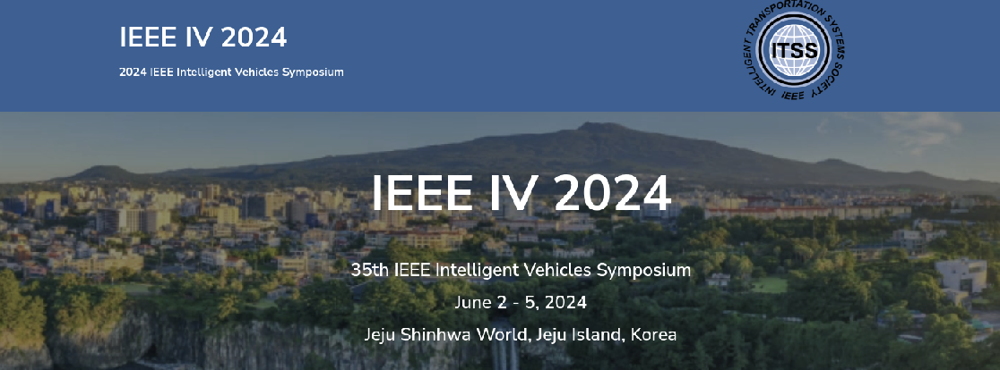

Overview
The Autoware Centers of Excellence is happy to anounce an incoming tutorial hosted at the IEEE Intelligent Vehicles Symposium in Jeju Shinhwa World, Jeju Island, Korea June 2-5, 2024. This tutorial aims to introduce the open-source autonomous driving software Autoware Universe and to detail how it can be used in autonomous driving research. Autoware is an open source software platform and supporting ecosystem for autonomous driving research and development. Speakers are invited from universities worldwide to give talks on various autonomous vehicle related topics and the application of Autoware in these fields. The tutorial will serve as a general introduction to Autoware and the challenges in deploying autonomous driving systems in the real world. It will help the audience get familiar with installing Autoware, deploying Autoware on vehicle platforms and using Autoware in research projects. The tutorial will be split into 7 50-minute sessions, each covering a topic of interest. A detailed description for each session is provided below.
Audience
Professors, students, independent researchers, and industrial partners are welcome to attend. To fully enjoy its benefit, the audience should have a background in engineering, computer science, mathematics, robotics, or related fields. It is also helpful but not required to have an understanding of autonomous vehicles on either hardware or software.Schedule
June 2th, 2024 Full Day 9:00am - 4:00pm Korean Time (all session times TBC)
9:00am - 9:10am Introduction: Autoware a platform for Autonomous
Driving development
9:10am - 10:00am Session I: Autoware on
Scaled Platforms
10:00am - 10:50am Session II: Autoware on
F1Tenth Premium
10:50am - 11:40am Session III: PolyVerif: An
Open-Source Environment for Autonomous Vehicle Validation and
Verification Research Acceleration
11:40am - 12:30am Session
IV: Quality Assurance for Autonomous Driving Systems: A Software
Engineering Perspective
1:30pm - 2:20pm Session V:
Software-Defined Vehicle Implementation based on Autoware’s Open AD
Kit on an Autonomous Developer Chassis
2:20pm - 3:10pm Session
VI: Nebula: The Open Source Universal Sensor Driver for
Autoware
3:10pm - 4:00pm Session VII: Customized AI model
development environment for Autoware platform
Sessions
Introduction
Ryohsuke MitsudomeTier IV Inc
To be updated
Session I: Autoware on Scaled Platforms
Rahul Mangharam , Po-Jen WangUniversity of Pennsylvania, and Autoware Foundation
This tutorial is about running the Autoware software stacks on the scaled vehicle platforms including the 1/10 scale racing car and the 1/2 scale autonomous gokart. F1Tenth: the speaker will give a general introduction of the hardware platform, then show how to install and run Autoware on the car. The tutorial will cover different Autoware modules such as control, planning, perception, etc. This will be a mix of videos and live demonstrations. Gokart: the speaker will first give an introduction on the gokart hardware, including autonomous driving mechanical parts, different sensors involved (LiDAR, Camera, GNSS, IMU), and the driving mode supported (manual, autonomous, remote control). Then, the speaker will demonstrate how to install and run Autoware on the vehicle platform (slides and videos only). https://github.com/autowarefoundation/autoware.universe/tree/f1tenth_galactic/f1tenth
Session II: Autoware on F1Tenth Premium
Kanghee Kim, Jinseop Jeong, Min Kim, Seryun KangSchool of Artificial Intelligence Convergence, Soongsil University, South Korea.
Autoware on F1Tenth Premium an all-in-one open-source autonomous driving stack for full-scale vehicles. As of November 2023, it has more than 300 packages and more than 630,000 lines of code. Many researchers and developers are interested in learning and researching Autoware, but full-scale vehicles are not always a good candidate platform for those purposes because of the high complexity and cost. Digital-twin simulators are usually considered a good candidate, but they may produce unrealistic sensory data that cannot be observed in the real world. As a handy vehicle platform for outdoor driving, we have developed a one-tenth vehicle, called F1Tenth Premium, that can exploit the potential of Autoware to the fullest extent. F1Tenth Premium builds upon the plain F1Tenth, which is capable of driving 70 kmph, and is equipped with high-resolution sensors used in full-scale vehicles such as 3D Lidars and automotive cameras. As a computing platform, it uses an NVIDIA Jetson AGX Orin board, powerful enough to run Autoware. In this tutorial, we will present a hands-on lab on how to build, install, and run Autoware on our F1Tenth Premium. We will also explain how to perform rosbag replay simulation, using real-world PCD and OSM maps. Finally, we will discuss the performance in terms of speed and battery run time, and lessons learned from outdoor driving experiences.
Session III: PolyVerif: An Open-Source Environment for Autonomous Vehicle Validation and Verification Research Acceleration
Rahul Razdan , Ravio SellFlorida Polytechnic University, USA; Tallinn University of Technology, Estonia.
Validation and Verification (V&V) of Autonomous Vehicles (AVs) is currently a vexing and unsolved problem. AVs integrate subsystems in areas such as detection, sensor fusion, localization, perception, and path planning. Each of these subsystems contains significant AI content integrated with traditional hardware and software components. The complexity for validating even a subsystem is daunting and the task of validating the whole system is nearly impossible. Fundamental research in advancing the state-of-the-art for AV V&V is required. However, for V&V researchers, it is exceedingly difficult to make progress because of the massive infrastructure requirements to demonstrate the viability of any solution. PolyVerif, the world’s first open-source solution focused on V&V researchers with the objective of accelerating the state-of-the-art for AV V&V research. PolyVerif provides an AI design and verification framework consisting of a digital twin creation process, an open-source AV engine (Autoware), access to several open-source physics based simulators, and open-source symbolic test generation engines. PolyVerif’s objective is to arm V&V researchers with a framework which extends the state-of-the-art on any one of the many major axes of interest and uses the remainder of the infrastructure to quickly demonstrate the viability of their solution. Given its open-source nature, researchers can also contribute their innovations to the project. Using this critical property of open-source environments, the innovation rate of the whole research community to solve these vexing issues can be greatly accelerated. The workshop will demonstrate the PolyVerif platform.
Session IV: Quality Assurance for Autonomous Driving Systems: A Software Engineering Perspective
Lei Ma, Zhijie Wang, Jiayang Song, Yuheng HuangUniversity of Tokyo
Quality assurance for Autonomous Driving Systems (ADS) has been long recognized as a notoriously challenging but crucial task which requires substantial domain-specific knowledge and engineering efforts to bridge the last gap of further deploying the state-of-the-art ADS methodologies to safety, reliability and security-concerned practical applications. Therefore, in this tutorial, we would like to provide a high-level overview of our work in advancing the quality assurance of ADS. This tutorial aims to introduce the solutions and frameworks to tackle the quality challenges of ADS from two aspects: 1) a complete quality analysis pipeline for AI components in ADS, from unit level to system level, and 2) a series of quality assurance frameworks for AI-enabled Cyber-physical Systems (CPS) specialized for ADS. In particular, this first part will present the works for quality analysis of ADS, including robustness benchmarking of AI-enabled sensor fusion systems, testing of simulation- based ADS, risk assessment from data distribution and uncertainty, and repair methods for AI components. The second part will summarize the works of trustworthy ADS from the CPS perspective, including the CPS benchmark, ensemble method for AI-controller fusion, AI-aware testing methods and LLM-enabled approaches for planning and design of AI components. The third part will introduce the recent advances in applying LLM for autonomous driving, including taking LLM-centric decision-making using language as an interface and opportunities in applying LLM for cross-modal test generation.
Session V: Software-Defined Vehicle Implementation based on Autoware’s Open AD Kit on an Autonomous Developer Chassis
Alexander CarballoGifu University
Software-Defined Vehicles (SDVs) have been identified as the next step in the automotive industry evolution, from electromechanical systems towards intelligent, connected, expandable, software-centric mobile systems that can be continuously updated and upgraded. Vehicles are already a collection of several software embedded subsystems such as adaptive cruise control, anti-lock braking, airbag, collision detection; user experience (UX) subsystems such as infotainment; and hardware subsystems such as electronic control units (ECUs). ADAS and AD systems exhibit limited modularity and functional decomposition when compared to subsystems in a vehicle. Therefore, their adoption in SDV as subsystems implemented in embedded hardware, each running real-time operating systems, has been limited. Founded on the ARM’s Scalable Open Architecture For Embedded Edge (SOAFEE) vision as to how to enable SDVs, our ongoing efforts aim to demonstrate the work being done to transform Autoware into smaller functional units as containers for SDV. The OpenAD Kit aims to lower the threshold for developing and deploying the Autoware software stack, in form of containerized workloads running on heterogeneous hardware architecture with good hardware abstraction which effectively means Autoware software can run on the cloud, at the edge or on virtual hardware. In this tutorial, we will present our efforts regarding the Autoware Foundation’s Open AD Kit, based on ARM’s Scalable Open Architecture For Embedded Edge (SOAFEE). We will also discuss our recent demonstration of Open AD Kit on an actual autonomous vehicle developer platform from PIX Moving.
Session VI: Nebula: The Open Source Universal Sensor Driver for Autoware
David Robert Wong, Maximilian SchmellerTIER IV, Inc.
Autoware is a software platform that has lowered the barrier to entry for autonomous driving development. However, deployment on real vehicles always starts with sensing, and the wide variety of sensors that are available make integration into Autoware with proprietary or independent drivers can be difficult. In this tutorial, we will present our sensor driver solution called Nebula. Various LiDAR, radar and camera solutions are already supported and the architecture is designed to allow easy integration of new sensors. We will cover the following topics: Nebula introduction: the background and motivation for Nebula will be explained, as well as the goals/non-goals of the project. How to use in Autoware: examples of how to integrate Nebula-supported sensors into your Autoware design. Adding new sensor support: a more technical deep-dive into the Nebula software design, and a description of the workflow that users can follow to integrate a new sensor type or model.
Session VII: Customized AI model development environment for Autoware platform
Kwon SoonFutureDrive Inc., and Daegu Gyeongbuk Institute of Science and Technology (DGIST)
Autoware is a well-structured, open-source, full-stack software platform for autonomous driving mobility. By using the open source Autoware platform, we can analyze and simulate each functional block such as perception, decision, planning and control in detail, and through parameter-level optimization, we can also apply it to demonstrate autonomous driving of an actual vehicle without difficulty. In particular, Autoware provides a detailed perception pipeline for 3D object detection, tracking, and motion prediction. Based on our experience using the Autoware platform, we believe that Autoware users are very interested in customizing perception blocks that directly affect autonomous driving performance. In this tutorial, we will introduce perception-specific AI datasets, evaluation benchmarks, and the AI model integration process for the Autoware platform. Our goal is to provide users with train/validation datasets for different types of sensor systems and objectively evaluate the performance of different AI models designed by themselves through the benchmark. Additionally, users can easily integrate customized AI models into the Autoware platform and test them on the vehicle using our Autoware AI configuration launcher(a cloud solution provided by FutureDrive).